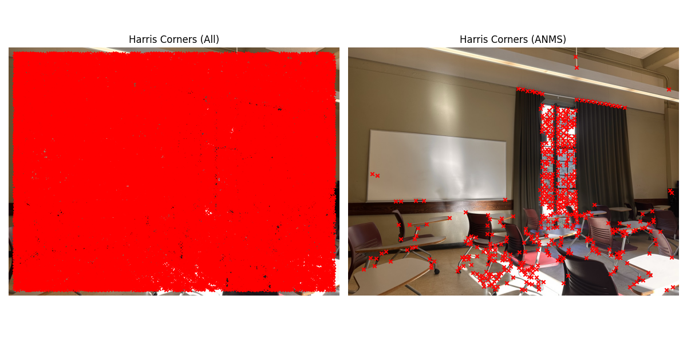
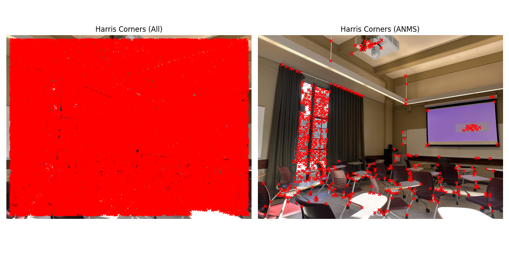
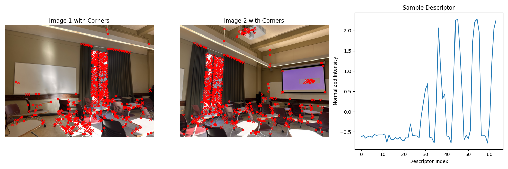
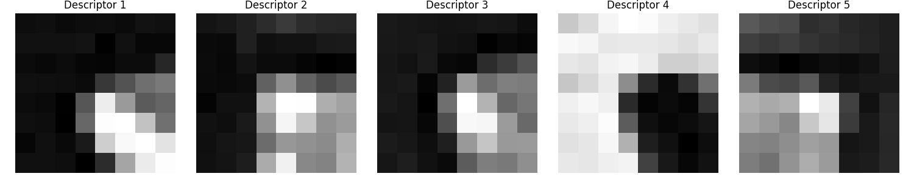
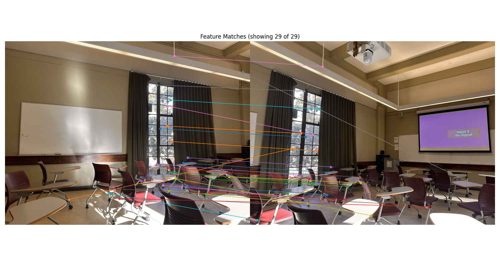
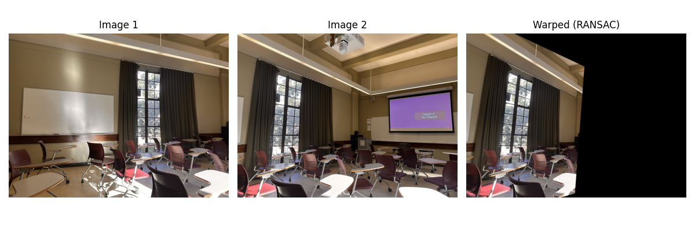
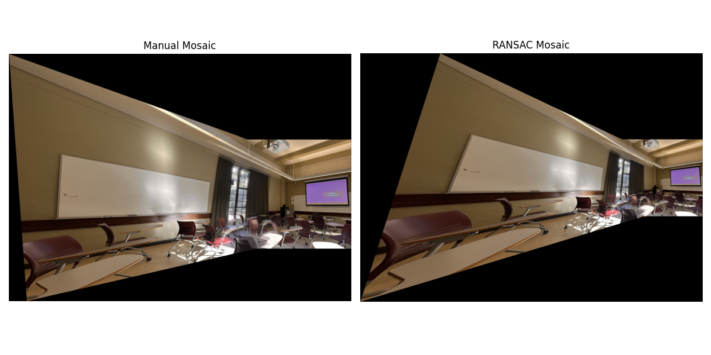
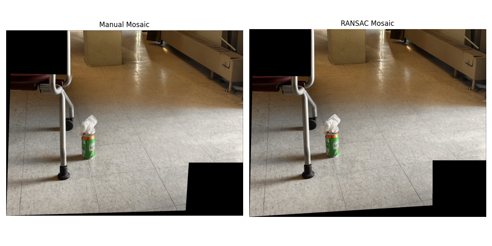
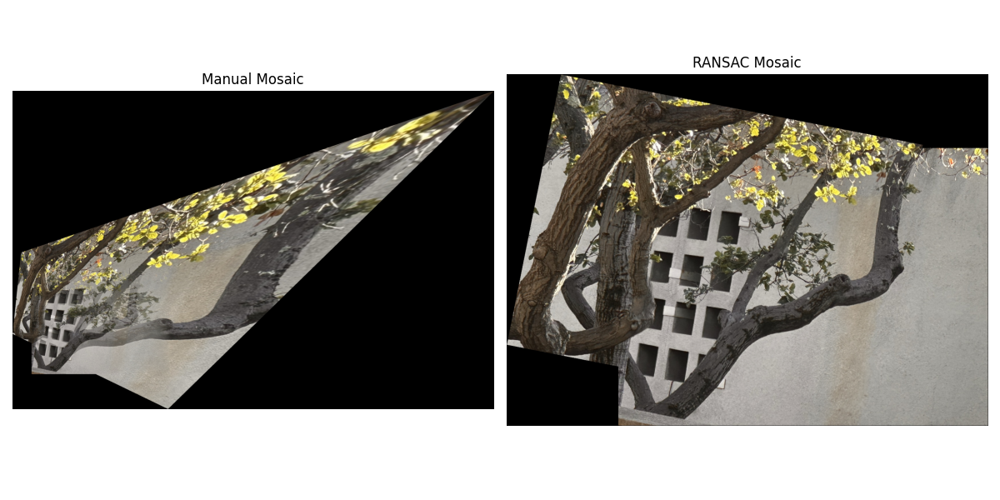

For this part, we had to take a couple sets of pictures with projective transforms between them. These are my three sets of images:
To find the homographies, I asked for user input to select four points in each image, which I then passed into the self-made computeH function. The function normalizes the point correspondences for numerical stability, constructs a linear system from the homography constraints, solves it using SVD, and denormalizes the result to get the final homography matrix H.
Here are the visualized correspondences for each set of images, along with the system of equations and final homography matrix:


$ h = \begin{bmatrix} 2.42715699e+00 & -1.90670796e-01 & -1.35529233e+03 \\ 7.29265562e-01 & 1.74436679e+00 & -4.76985769e+02 \\ 1.18994519e-03 & -3.10999300e-04 & 1.00000000e+00 \end{bmatrix} $


$ h = \begin{bmatrix} 4.28715752e+00 & 2.96639109e-01 & -1.50049895e+03 \\ 1.40546172e+00 & 4.86067520e+00 & -1.84905331e+03 \\ 2.10144284e-03 & 3.80773454e-03 & 1.00000000e+00 \end{bmatrix} $


$ h = \begin{bmatrix} 1.10731351e+00 & -1.22324669e-01 & -4.09416193e+02 \\ 7.94549887e-02 & 9.09710501e-01 & 3.27782373e+02 \\ 1.26687637e-04 & -2.26946783e-04 & 1.00000000e+00 \end{bmatrix} $
I implemented two image warping functions using inverse mapping: nearest neighbor and bilinear interpolation. The process involves creating a grid of destination coordinates, transforming them back to source coordinates using the inverse homography H^(-1), then sampling pixel values from the source image. The main challenges were handling coordinate transformations correctly, managing boundary conditions when source coordinates fall outside the image bounds, and ensuring proper interpolation for smooth results. Bilinear interpolation provides better quality by averaging the four nearest pixels, while nearest neighbor is faster but can produce aliasing artifacts.


For the mosaic creation, I implemented a weighted averaging approach that combines the warped images using alpha masks. The process involves computing the mosaic bounds by projecting all image corners into a common coordinate system, creating alpha masks that fade from the center to edges of each image, and then blending using weighted averaging: (img1 * mask1 + img2 * mask2) / (mask1 + mask2). The main challenges were determining the optimal mosaic canvas size to contain both warped images, handling edge cases where masks sum to zero, and ensuring proper coordinate transformations between the reference and source image spaces. The alpha masks help create smooth transitions and reduce visible seams between the blended images.


For automatic feature detection, I implemented Harris corner detection using scikit-image's corner_harris function. The Harris detector identifies points where there are significant intensity changes in multiple directions, making them good candidates for feature points. I used a sigma value of 1 for the Gaussian smoothing and applied edge discarding to avoid selecting corners too close to image boundaries.
I also implemented Adaptive Non-Maximal Suppression (ANMS) to select the most distinctive corners while ensuring they are well-distributed across the image. ANMS works by sorting corners by their Harris response values and then selecting corners that are sufficiently far apart (minimum distance of 10 pixels) from previously selected corners. This helps avoid clustering of feature points and ensures better coverage of the image.


For each detected corner, I extracted 8x8 pixel patches as feature descriptors. The key implementation detail is that I extract these patches from a larger 40x40 window around each corner to capture more context. Each patch is then bias/gain normalized by subtracting the mean and dividing by the standard deviation. This normalization makes the descriptors invariant to lighting changes and improves matching performance.
The descriptor extraction process involves checking that each corner has enough padding around it to extract a valid 8x8 patch, then flattening the patch into a 64-dimensional vector. Only corners with valid descriptors are kept for the matching process.


I implemented feature matching using the Lowe's ratio test approach. For each descriptor in the first image, I find its two nearest neighbors in the second image based on Euclidean distance. A match is considered valid if the ratio of the first nearest neighbor distance to the second nearest neighbor distance is below a threshold (I used 0.7). This helps filter out ambiguous matches and improves the quality of correspondences.
The matching process involves computing distances between all descriptor pairs, which can be computationally expensive for large numbers of features. I used numpy's efficient vectorized operations to speed up the distance calculations. The final result is a set of matched point pairs that can be used for homography estimation.

To handle outliers in the feature matches, I implemented 4-point RANSAC (Random Sample Consensus) to find a robust homography estimate. RANSAC works by randomly selecting 4 point correspondences, computing a homography from them, and then counting how many other points are consistent with this homography (within a threshold distance, I used 3 pixels). This process is repeated many times (1000 iterations), and the homography with the most inliers is selected.
The RANSAC implementation includes several important details: I use the same computeH function from Part A to estimate homographies from 4-point sets, I project all points using the candidate homography and measure reprojection errors, and I only accept homographies that have at least 4 inliers. The final homography is recomputed using all inliers to get the best possible estimate.
Using the RANSAC-computed homography, I created automatic mosaics by adapting the blending code from Part A. The process involves warping the source image to align with the reference image using the robust homography, then applying the same alpha blending technique to create seamless mosaics.
I compared the results of manual point selection (Part A) with automatic feature detection and matching (Part B). The automatic approach generally produces good results, though the quality depends on having sufficient distinctive features and good feature matches between the images. The RANSAC step is crucial for filtering out bad matches that could otherwise lead to poor homography estimates.



